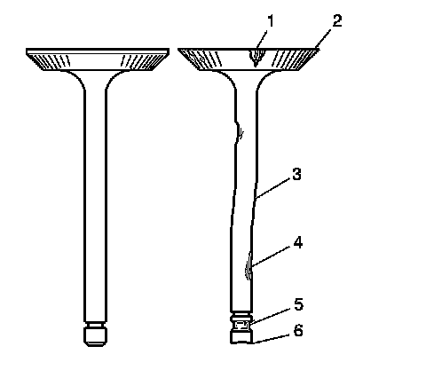
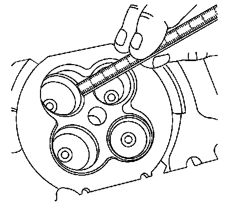
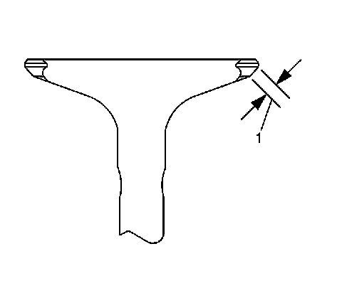
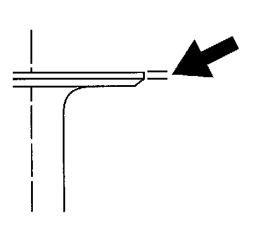
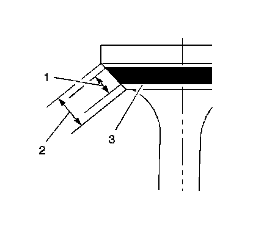
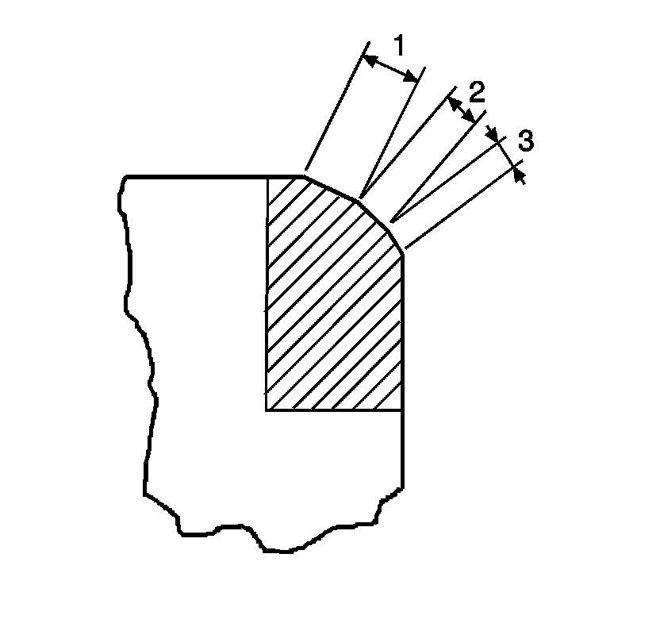
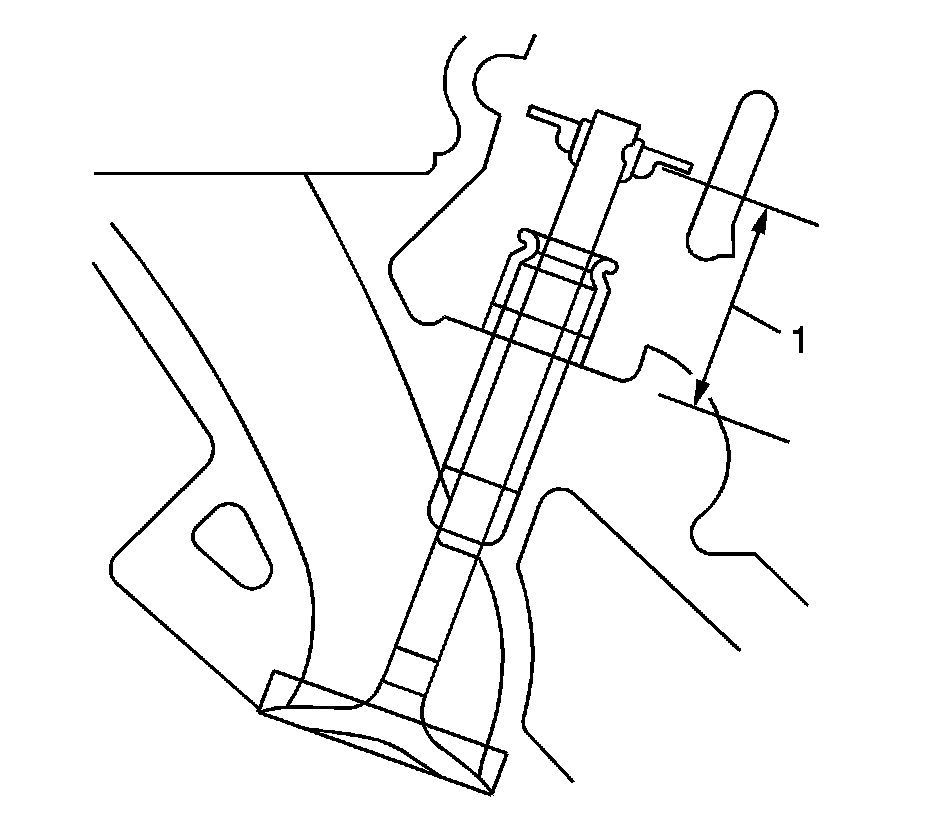

59. Valve and Seat Grinding
Valve and Seat Grinding
Valve Cleaning Procedure
1. Use soft bristle wire brush to clean any carbon build-up from the valve head. DO NOT use a wire brush on any part of the valve stem. The valve stem is chrome plated to provide enhanced wear characteristics. Wire brushing the stem could remove the chrome plating.
2. Thoroughly clean the valve with solvent and wipe dry.
Valve Visual Inspection Procedure

1. Inspect the valve for damage from the head to tip for the following conditions:
* Pitting in the valve seat area (1)
* Lack of valve margin (2)
* Bending in the valve stem (3)
* Pitting or excessive wear in the stem (4)
* Worn valve key grooves (5)
* Worn valve tip (6)
2. Replace the valve if any of these conditions exist.
Valve Measurement and Reconditioning Overview
* Proper valve service is critical to engine performance. Therefore, all detailed measurement procedures must be followed to identify components that are out of specification.
* If the measurement procedures reveal that the valve or valve seat must be reconditioned, it is critical to perform the measurement procedures after reconditioning.
Valve Seat Width Measurement Procedure

1. Measure the valve seat width in the cylinder head using a proper scale.

2. Measure the seat width on the valve face (1) using a proper scale.
Important: The seat contact area must be at least 0.5 mm (0.020 in) from the outer diameter (margin) of the valve. If the contact area is too close to the margins, the seat must be reconditioned to move the contact area away from the margin.
3. Compare your measurements with the specifications listed in Engine Mechanical Specifications (Specifications) .
4. If the seat widths are acceptable, check the valve seat roundness using the Valve Seat Roundness Measurement Procedure.
5. If the seat width is not acceptable, you must grind the valve seat using the Valve and Seat Reconditioning Procedure to bring the width back into specification. Proper valve seat width is critical to providing the correct amount of valve heat dissipation.
Valve Seat Roundness Measurement Procedure
1. Measure the valve seat roundness using a dial indicator attached to a tapered pilot installed in the guide. The pilot should have a slight bind when installed in the guide.
Notice: The correct size pilot must be used. Do not use adjustable diameter pilots. Adjustable pilots may damage the valve guides.
2. Compare your measurements with the specifications listed in Engine Mechanical Specifications (Specifications) .
3. If the valve seat exceeds the roundness specification, you must grind the valve and valve seat using the Valve and Seat Reconditioning Procedure.
4. If new valves are being used, the valve seat roundness must be within 0.05 mm (0.002 in).
Valve Margin Measurement Procedure

1. Measure the valve margin using an appropriate scale.
2. Reference the specifications in this section for minimum valve margin and compare them to your measurements.
3. If the valve margins are beyond specification, replace the valves.
4. If the valve margins are within specification and do not require refacing, test the valve for seat concentricity using the Valve-to-Seat Concentricity Measurement Procedure.
Valve-to-Seat Concentricity Measurement Procedure
* Checking the valve-to-seat concentricity determines whether the valve and seat are sealing properly.
* You must measure the valve face and the valve seat to ensure proper valve sealing.

1. Coat the valve face lightly with blue dye (3).
2. Install the valve in the cylinder head.
3. Turn the valve against the seat with enough pressure to wear off the dye.
4. Remove the valve from the cylinder head.
5. Inspect the valve face.
* If the valve face is concentric, providing a proper seal, with the valve stem, a continuous mark will be made around the entire face (1).
Important: The wear mark MUST be at least 0.5 mm (0.020 in) from the outer diameter, the margin, of the valve. If the wear mark is too close to the margin, the seat must be reconditioned to move the contact area away from the margin.
* If the face is not concentric with the stem, the mark will NOT be continuous around the valve face. The valve should be refaced or replaced and the seat must be reconditioned using the Valve and Seat Reconditioning Procedure.
Valve and Seat Reconditioning Procedure

Important:
* If the valve seat width, roundness or concentricity is beyond specifications, you must grind the seats in order to ensure proper heat dissipation and prevent the build up of carbon on the seats.
* It is necessary to reface the valve if seat reconditioning is required unless a new valve is used.
1. Grind the valve seats (2) to the proper angle specification listed in Engine Mechanical Specifications (Specifications) .
2. Using the proper angle specification listed in Engine Mechanical Specifications (Specifications) , grind, relieve, the valve seats (1) to correctly position the valve seating surface (2) to the valve.
3. Using the proper angle specification listed in Engine Mechanical Specifications (Specifications) , grind, undercut, the valve seats (3) to narrow the valve seat widths to the specifications listed in Engine Mechanical Specifications (Specifications) .
4. If the original valve is being used, grind the valve to the specifications listed in Engine Mechanical Specifications (Specifications) . Measure the valve margin again after grinding using the Valve Margin Measurement Procedure. Replace the valve if the margin is out of specification. New valves do not require grinding.
5. When grinding the valves and seats, grind off as little material as possible. Cutting valve seat results in lowering the valve spring pressure.
6. Install the valve in the cylinder head.
* If you are using refaced valves, lap the valves into the seats with a fine grinding compound. The refacing and reseating operations should leave the refinished surfaces smooth and true so that minimal lapping is required. Excessive lapping will groove the valve face and prevent a good seat when hot.
Important: Be sure to clean any remaining lapping compound from the valve and seat with solvent and compressed air prior to final assembly.
* If you are using new valves, do not lap the valves under any condition.
7. After obtaining the proper valve seat width in the cylinder head, you must re-measure the valve stem height using the Valve Stem Height Measurement Procedure.
8. If the valve stem height is acceptable, test the seats for concentricity using the Valve-to-Seat Concentricity Measurement Procedure.
Valve Stem Height Measurement Procedure

Important: To determine the valve stem height measurement, measure from the valve spring seat to the valve spring retainer.
1. Install the valve into the valve guide.
2. Ensure the valve is seated to the cylinder head valve seat.
3. Install the valve stem oil seal.
4. Install the valve spring retainer and valve stem locks.
5. Measure the distance (1) between the valve stem oil seal spring seat to the bottom of the valve spring retainer.
6. If the maximum height specification is exceeded, a new valve should be installed and the valve stem height re-measured.
Notice: DO NOT grind the valve stem tip. The tip of the valve is hardened and grinding the tip will eliminate the hardened surface causing premature wear and possible engine damage.
Notice: DO NOT use shims in order to adjust valve stem height. The use of shims will cause the valve spring to bottom out before the camshaft lobe is at peak lift and engine damage could result.
7. If the valve stem height still exceeds the maximum height specification, the cylinder head must be replaced.